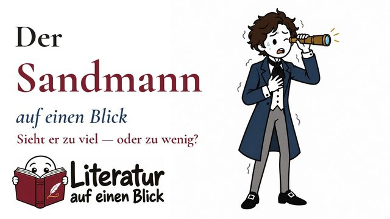

Literatur auf einen Blick
Bücher
Jedes Werk: ein Hauptvideo mit Plakat, ein Short, und nach und nach die Vertiefungen.
Durch die Epochen
Mit Bild: erschienen, zum Anklicken. Gestrichelt: in Arbeit.
Antike
- König Ödipusum 429 v. Chr. · Sophokles · in Arbeit
Aufklärung
- Nathan der Weise1779 · Lessing · in Arbeit
zwischen Klassik und Romantik
Romantik
- Der goldne Topf1814 · Hoffmann · in Arbeit

Vormärz
- Woyzeck1836/37 · Büchner · in Arbeit
Fin de Siècle
20. Jahrhundert
- 19841949 · Orwell · in Arbeit
-
Heinrich von Kleist · um 1800 · zwischen Klassik und Romantik
Der zerbrochne Krug
Was passiert, wenn der, der die Wahrheit finden soll, selbst der Täter ist?


In Arbeit
Diese Werke sind in Produktion. Die Reihenfolge richtet sich nach den Prüfungsterminen und euren Wünschen in den Kommentaren.
- Woyzeck Georg Büchner
- Nathan der Weise Gotthold Ephraim Lessing
- Der goldne Topf E. T. A. Hoffmann
- 1984 George Orwell
- König Ödipus Sophokles
Welches Buch fehlt dir? Schreib es unter ein Video auf YouTube.